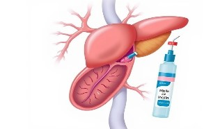

1型糖尿病是一种自身免疫性疾病，身体的免疫系统错误地攻击并破坏了胰腺中产生胰岛素的β细胞。随着β细胞的逐渐破坏，胰岛素分泌能力完全丧失，导致血糖无法被有效调节。
- 遗传因素：与HLA基因密切相关
- 环境因素：病毒感染（如柯萨奇病毒）可能触发免疫反应
- 免疫系统异常：产生针对β细胞的自身抗体

胰岛素依赖型糖尿病

1型糖尿病是一种自身免疫性疾病，身体的免疫系统错误地攻击并破坏了胰腺中产生胰岛素的β细胞。随着β细胞的逐渐破坏，胰岛素分泌能力完全丧失，导致血糖无法被有效调节。
症状通常在儿童或青少年时期突然出现，进展迅速：
终身依赖外源性胰岛素治疗：